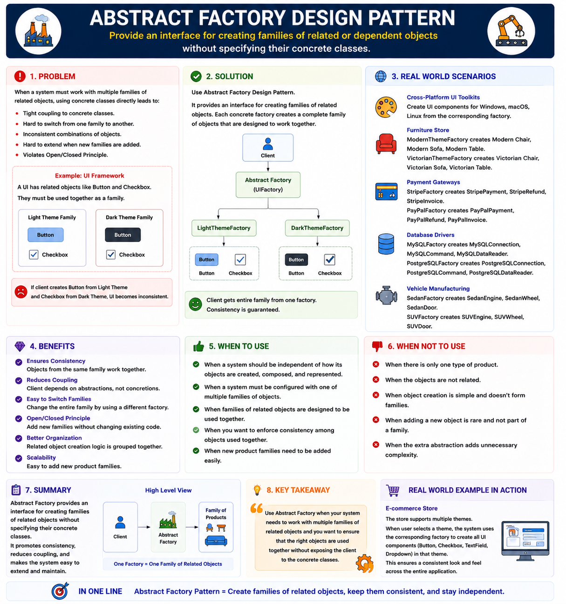

Abstract Factory Design Pattern
Creational Design Pattern
🔷 Abstract Factory Design Pattern
The Abstract Factory Pattern is a Creational Design Pattern.
It states:
Provide an interface for creating families of related objects without specifying their concrete classes.
🧠 First Understand the Problem
Suppose you are building a UI framework.
Platform supports :
- Windows UI
- Mac UI
For each platform you need:
- Button
- Checkbox
For Windows:
Windows Button
Windows Checkbox
For Mac:
Mac Button
Mac Checkbox
These are related products. ( The products must belong to the same family. )
2. Bad Code
A beginner writes:
Button
interface Button {
void render();
}
class WindowsButton implements Button {
@Override
public void render() {
System.out.println("Windows Button");
}
}
class MacButton implements Button {
@Override
public void render() {
System.out.println("Mac Button");
}
}Checkbox
interface Checkbox {
void render();
}
class WindowsCheckbox implements Checkbox {
@Override
public void render() {
System.out.println("Windows Checkbox");
}
}
class MacCheckbox implements Checkbox {
@Override
public void render() {
System.out.println("Mac Checkbox");
}
}Client code :
public class Main {
public static void main(String[] args) {
String os = "WINDOWS";
Button button;
Checkbox checkbox;
if(os.equals("WINDOWS")) {
button = new WindowsButton();
checkbox = new WindowsCheckbox();
}
else {
button = new MacButton();
checkbox = new MacCheckbox();
}
button.render();
checkbox.render();
}
}Output :
Windows Button
Windows Checkbox🚨 Issues in Bad code :
1. Violation of Open/Closed Principle
Suppose adding new Platform "Linux"
Every new platform or component forces you to modify existing code. You cannot extend the
system
without editing files that already work.
So Need modifications in many places.
2. Tight coupling to concrete classes
The client knows all concrete classes:
new WindowsButton()
new WindowsCheckbox()
new MacButton()
new MacCheckbox()
So the client is tightly coupled to every implementation.
3. Easy To Mix Families
By mistake:
Button button = new WindowsButton();
Checkbox checkbox = new MacCheckbox();
Now:
Windows Button
Mac Checkbox
Now you've mixed two different families so Which results Invalid UI combination.
✅ Solution
3️⃣ Abstract Factory Solution
Create an entire family together.
WindowsFactory
├── WindowsButton
└── WindowsCheckbox
MacFactory
├── MacButton
└── MacCheckbox
So Client chooses the factory.
Factory creates the matching family.
Complete Code
Step 1: Product Interfaces
Button
interface Button {
void render();
}Checkbox
interface Checkbox {
void render();
}Step 2: Windows Products
class WindowsButton implements Button {
public void render() {
System.out.println("Windows Button");
}
}
class WindowsCheckbox implements Checkbox {
public void render() {
System.out.println("Windows Checkbox");
}
}Step 3: Mac Products
class MacButton implements Button {
public void render() {
System.out.println("Mac Button");
}
}
class MacCheckbox implements Checkbox {
public void render() {
System.out.println("Mac Checkbox");
}
}Step 4: Abstract Factory
interface UIFactory {
Button createButton();
Checkbox createCheckbox();
}Step 5: Concrete Factories
Windows Factory
class WindowsFactory implements UIFactory {
public Button createButton() {
return new WindowsButton();
}
public Checkbox createCheckbox() {
return new WindowsCheckbox();
}
}Mac Factory
class MacFactory implements UIFactory {
public Button createButton() {
return new MacButton();
}
public Checkbox createCheckbox() {
return new MacCheckbox();
}
}Step 6: Client
public class Main {
public static void main(String[] args) {
String os = System.getProperty("os.name");
UIFactory factory;
if (os.contains("Windows")) {
factory = new WindowsFactory();
} else {
factory = new MacFactory();
}
Button button = factory.createButton();
Checkbox checkbox = factory.createCheckbox();
button.render();
checkbox.render();
}
}Output (on Windows)
Windows Button
Windows CheckboxOutput (on macOS)
Mac Button
Mac Checkbox6. How It Solves Problem
1. Centralized Object Creation
Before
Client decides:
new WindowsButton();
new WindowsCheckbox();
Client manages everything.
After
Client decides only Factory:
GUIFactory factory = new WindowsFactory();
Factory handles all related products.
2. Family Consistency Guaranteed
WindowsButton
WindowsCheckbox
MacButton
MacCheckbox
Resulting No mixing of UI.
4️⃣ When To Use
Use Abstract Factory when:
✅ When To Use Abstract Factory
🏭 When Multiple Products Come In Families Use Abstract Factory Pattern
Related products belong to the same family.
• Mac UI Components
• Linux UI Components
🎨 Product Family Changes At Runtime
The entire family of related objects can be switched dynamically.
• Light Theme Factory
5️⃣ When NOT To Use
Don't use Abstract Factory when:
❌ When NOT To Use Abstract Factory
1️⃣ Only One Product Exists
Use the normal Factory Pattern.
2️⃣ Small Applications
Abstract Factory introduces multiple factories and product classes, which can become over-engineering for simple applications.
6️⃣ Real World Usage
GUI Toolkits
Most UI frameworks internally use Abstract Factory concepts.
Database Drivers
Different database providers create families of related objects.
Cloud SDKs
AWS, Azure, GCP clients.
Spring
Bean families and environment-specific configurations often resemble Abstract Factory ideas.
🧠 Simple Meaning
🏭 Factory Pattern
Creates one type of object.
↓
UPI Payment
Card Payment
🏢 Abstract Factory Pattern
Creates multiple related objects together.
├─ Windows Button
└─ Windows Checkbox
Mac Factory
├─ Mac Button
└─ Mac Checkbox
Factory vs Abstract Factory
This is the most important interview question.
| Factory Method | Abstract Factory |
|---|---|
| Creates one product | Creates multiple related products |
| One factory method | Multiple factory methods |
| Returns one object | Returns a family of objects |
| Simpler | More complex |
| Example: PaymentFactory | Example: GUIFactory |
💪 Practice Exercise
For Practice check out this page:
Ready to practice? Try this hands-on exercise to reinforce your understanding of Abstract Factory Design Pattern :
Start Exercise on AlgoMaster📚 Understand the Differences Between Creational Patterns
Check out this comparison guide to understand their differences, use cases, and when each pattern should be applied.
🎯 Summary
Abstract Factory Pattern is a Creational Design Pattern that provides an interface for creating families of related objects without exposing their concrete implementations. It solves the problem of creating compatible product families (such as Windows UI components, Mac UI components, or AWS services) while keeping client code independent of concrete classes. The client interacts only with abstract factories and abstract products, making the system flexible, extensible, and compliant with OCP and DIP.
Use Abstract Factory when you need to create multiple related objects that belong to the same family, such as Windows UI components, Mac UI components, or cloud-provider-specific services.
